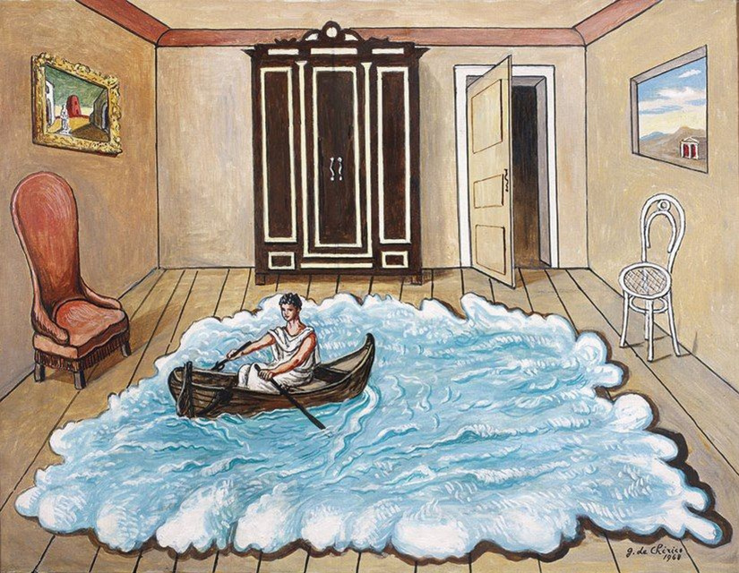

Arte Italiano: Un Viaje a Través de la Historia
Italia ha sido cuna de algunos de los movimientos artísticos más importantes del mundo. Desde el Renacimiento hasta el Arte Contemporáneo, el arte italiano ha dejado una huella indeleble en la historia cultural. Te invitamos a descubrir su fascinante evolución a lo largo de los siglos.
El Renacimiento: Un Renacer de la Humanidad
El Renacimiento italiano, uno de los períodos más destacados en la historia del arte, marcó un renacer cultural y artístico, donde los artistas comenzaron a redescubrir los valores de la Antigüedad clásica. Este período vio el florecimiento de una estética que celebraba la belleza humana, la proporción y la perspectiva. Los grandes maestros de este período incluyen:
- Leonardo da Vinci: Su obra más famosa, La Mona Lisa, es un testimonio de su genio en la captura de la emoción humana y la técnica del sfumato.
- Michelangelo Buonarroti: Su trabajo en la Capilla Sixtina y su escultura de David representan la perfección del cuerpo humano y la profundidad emocional.
- Raphael Sanzio: Conocido por su armoniosa combinación de elementos clásicos y su habilidad para crear composiciones equilibradas, como en su Escuela de Atenas.
El Neoclasicismo: Regreso a la Antigüedad
A finales del siglo XVIII, el Neoclasicismo se inspiró en los ideales del arte griego y romano. Buscaba la simplicidad, el orden y la simetría, en contraste con la exuberancia del Barroco. El arte italiano del Neoclasicismo reflejaba los valores de la Revolución Francesa y los ideales republicanos.
- Caravaggio: Maestro de la luz y la sombra, sus obras como La vocación de San Mateo cambiaron la percepción del realismo en el arte.
- Gian Lorenzo Bernini: Escultor y arquitecto, conocido por su capacidad para imbuir las figuras de sus esculturas con una vibrante energía, como en su Éxtasis de Santa Teresa.
El Arte Moderno: La Innovación del Siglo XX
Italia también jugó un papel crucial en la vanguardia artística del siglo XX, siendo la cuna de movimientos como el Futurismo, el Arte Povera y el surrealismo italiano.
- Umberto Boccioni: Figura principal del Futurismo, su obra La ciudad que sube captura el dinamismo y la modernidad de la vida urbana.
- Giorgio de Chirico: Con su estilo metafísico, de Chirico combinó lo onírico y lo misterioso, dando paso a una nueva forma de entender la realidad. 
El Arte Italiano Hoy: Una Fusión de Tradición y Vanguardia
En la actualidad, Italia sigue siendo un referente global del arte contemporáneo. Artistas como Maurizio Cattelan, Michelangelo Pistoletto y Paola Pivi exploran nuevas formas de expresión, mientras continúan la rica tradición de sus predecesores.